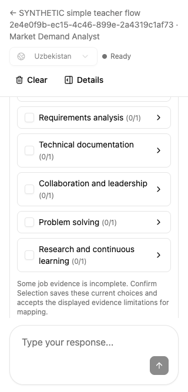
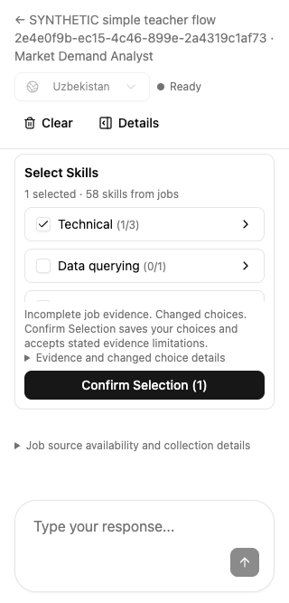
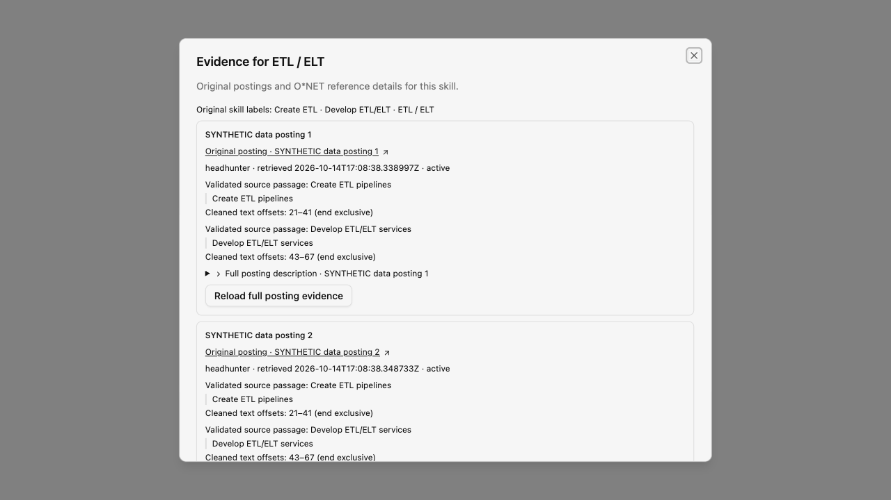
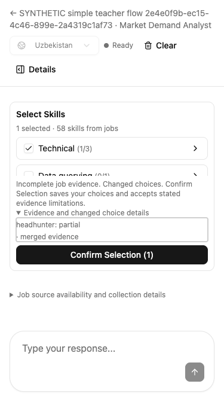

The 41-category selector stays bounded.
Restoration and editing are usable.
Earlier review limitation: the first review used one category with 58 members. It did not cover 58 supported skills spread across 41 small categories. That gap allowed the very tall restored selector to pass. This follow-up specifically reproduces that shape; the earlier result is not presented as coverage for it.




Measured restoration and expanded evidence
The disposable course contains 58 supported skills in 41 populated categories plus 394 reference-only candidates. Technical is stored at position 39 and contains SQL, ETL / ELT, and one synthetic skill. SQL is the saved selection. The stress case also includes a saved conversation, 28 evidence limitations, and one unresolved changed-choice record.
| Viewport | Before: card / heading | After restoration | All categories + long evidence open | Heading, count, Confirm, Question |
|---|---|---|---|---|
| 1280 × 720 | 2088 px; heading y=-1391 | 400 px; heading y=117 | 400 px | All four visible |
| 390 × 844 | 2120 px; heading y=-1352 | 434 px; heading y=207 | 460 px | All four visible |
| 375 × 667 | Added short-screen breakpoint | 283 px; heading y=181 | 283 px | All four visible |
| 320 × 667 | 2348 px; heading y=-1625 | 283 px; heading y=181 | 283 px | All four visible |
Visibility checks include clipping by the conversation container, not only the browser window. Category expansion and the long disclosure remain bounded. Category labels and controls can be reached using the keyboard.

Findings resolved in this follow-up
| Severity | Reproduction | Verified result |
|---|---|---|
| P2 | Restore an analysis with 58 supported skills in 41 categories. Every category row expands the main card, while chat restoration scrolls to its bottom. The heading and selection context disappear.frontend/src/features/market-demand/components/SkillSelectionCard.tsx:32 (released version) | Native bounded browsing keeps the header and primary action visible. Saved categories are promoted using persisted selection, so local checkbox changes do not reorder rows. |
| P2 | The first bounded attempt gave fixed evidence content priority over the category list. With limited evidence and changed choices, opening details left 0 px for categories at 375 × 667 and 1 px at 320 × 667. | Retested the revised space allocation at both short-screen widths, including full wrapped labels, all category expansion, and long evidence. A subsequent taller-card regression was also caught and corrected before this verdict. |
Interactions independently exercised
| Check | Observed result |
|---|---|
| Restore saved choices | Technical moves from stored position 39 to the first visible category. Selecting other categories and excluding one member leave the order stable. |
| Category semantics | Space selects all three Technical members. Excluding Synthetic competency 39 leaves SQL and ETL selected and the category mixed. Collapsing and reopening retains the exclusion. |
| Complete reachability | All 41 category controls and their full labels are keyboard reachable at all four widths. Expanding all categories exposes 58 individual choices, with no reference-only entries added to the selector. |
| Original ETL / ELT evidence | All four distinct posting links remain. Each posting retains both validated ETL and ELT phrases. Escape returns focus to the same Inspect control. |
| Long optional evidence | The 28 limitations and changed-choice detail can be scrolled to the end. The main card remains bounded and the primary controls remain visible. Categories can still be reached while evidence is open. |
| Return to conversation | Question stays visible and can receive an unsent follow-up. No market API mutations occurred during the layout interaction pass. Saved selected/excluded IDs are unchanged; publication remains zero. |




Evidence and scope
This review used the real local UI, authentication, API, SQL, and existing Neo4j fixture. Only the reviewer’s disposable course and report artifacts were changed. Candidate IDs, original labels, validated observations, and evidence references were preserved during fixture regrouping. No production writes, application edits, commits, or deployments were performed by this reviewer.
Scoped code review of this patch covers category ordering, eligibility, local selection behavior, and bounded scrolling. Backend confirmation, provider orchestration, publication, and stale-state protection were unchanged; their earlier acceptance evidence remains linked. The follow-up does not claim to test live provider availability, unconstrained model output, every possible screen size, or mobile virtual-keyboard behavior.